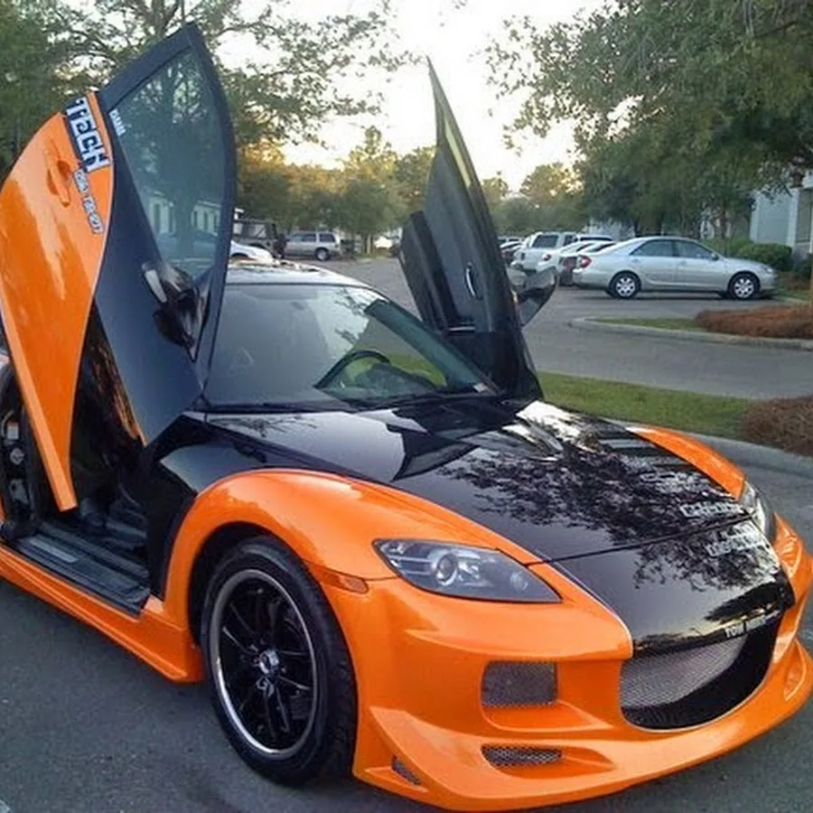
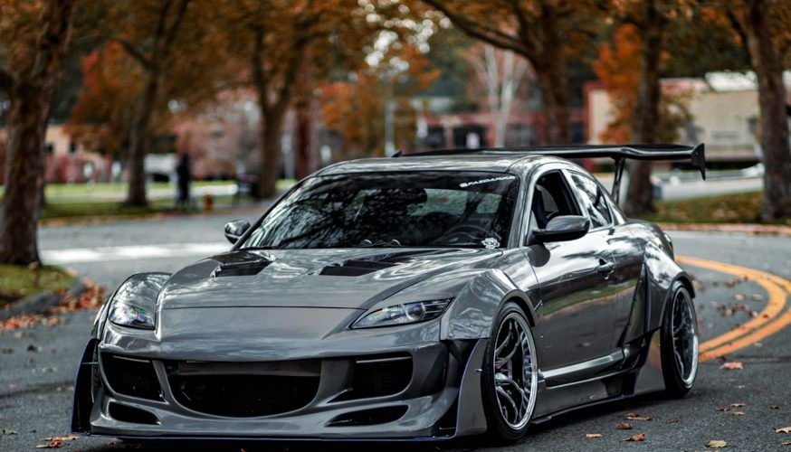
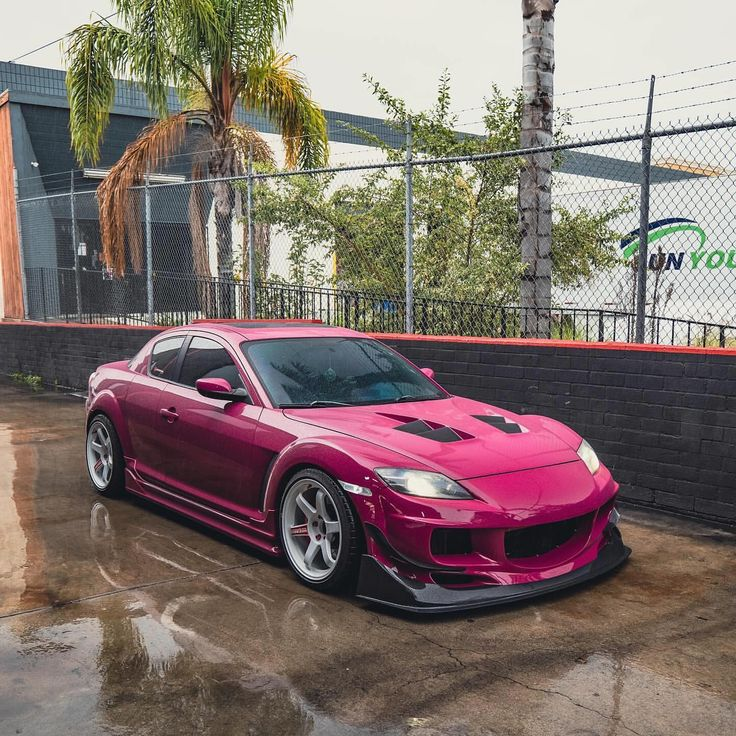

Миссия: Спасти роторный двигатель
После прекращения производства легендарной RX-7 в 2002 году, Mazda поставила перед собой амбициозную задачу — не просто выпустить новое спортивное купе, а возродить и усовершенствовать философию роторно-поршневого двигателя (РПД, двигатель Ванкеля) в реалиях нового века. Дебютировавшая в 2003 году RX-8 стала не столько преемником RX-7, сколько её революционной реинкарнацией, сфокусированной на комфорте, практичности и экологичности, но без потери спортивного духа.
Дизайн: «Свободные двери» и функциональная эстетика
Дизайн RX-8, созданный под руководством Икуо Маэда, стал её визитной карточкой.
- Ключевой инновацией стали бесстоечные задние двери, открывающиеся против хода (двери типа «бескрылка») . Это решение обеспечивало легкий доступ к просторному заднему дивану, что было немыслимо для классических 2+2 купе. RX-8 позиционировалась как четырехместный спортивный автомобиль .
- Агрессивный, но элегантный клиновидный силуэт с короткими свесами, выразительными арками и фирменной решеткой отражал динамику.
- Центральная выхлопная труба стала узнаваемым элементом дизайна задней части.
Конструкция: Идеальный баланс
Инженеры Mazda сделали всё для низкого центра тяжести и идеального распределения веса (50:50).
- Компактный и легкий роторный двигатель разместили далеко позади передней оси, фактически по центру колесной базы. Это превратило RX-8 в автомобиль с центральным расположением двигателя по ощущениям.
- Жесткий кузов с силовой структурой в виде «прицела» (powerplant frame) связывал двигатель и задний дифференциал.
- Подвеска — независимая на двойных поперечных рычагах спереди и многорычажная схема сзади.


Двигатель Renesis (13B-MSP): Эволюция ротора
Название двигателя — Renesis — происходило от слов ROTARY ENGINE (роторный двигатель) и GENESIS (генезис, начало). Это была глубокая переработка классического двухроторного мотора 13B.
- Главным изменением стал перенос впускных и выпускных окон с боковых крышек на боковой корпус самого ротора (Side Port Exhaust) . Это позволило улучшить наполнение цилиндров, снизить перекрытие фаз и, как следствие, существенно уменьшить расход масла и токсичность выхлопа .
- Двигатель развивал от 192 до 231 л.с. в зависимости от версии и рынка. Версия с высокой мощностью (231 л.с., 6-ступенчатая МКПП) имела дополнительный впускной клапан для лучшей отдачи на высоких оборотах.
- Красная зона начиналась с 9000 об/мин , а характерный высокочастотный вой ротора стал её аудиовизиткой.
Трансмиссия и шасси
- Коробки передач: 5- или 6-ступенчатая «механика» или 4-ступенчатый «автомат» с лепестками переключения (только для маломощной версии).
- Привод — исключительно задний. В качестве опции предлагалась система динамической стабилизации DSC .
- Подвеска была нацелена на точность и обратную связь, а не на жесткость. Автомобиль славился своей поворачиваемостью и легкостью управления .
Феномен «роторного» образа жизни
Владеть Mazda RX-8 — значит не просто иметь спортивное купе. Это означает принять философию особого автомобиля с особыми потребностями. Её ценили за уникальный характер: плавность работы, отсутствие вибраций, умопомрачительную «крутимость» до высоких оборотов и акустику, не имеющую аналогов среди поршневых моторов.
Плюсы и уникальные особенности
- Невероятно ровная тяга и плавность работы двигателя, уникальная акустика.
- Блестящая, живая управляемость и идеальная развесовка.
- Практичность для 2+2 купе благодаря уникальным дверям.
- Яркий, запоминающийся дизайн.
- Высокий уровень базовой комплектации.
Суровые реалии и «болевые точки» РПД
- Ресурс и капитальный ремонт (апексы, статор): Главный минус. Ресурс двигателя до капремонта в среднем составляет 80-120 тыс. км (после рестайлинга 2008 г. — чуть больше). Капремонт — сложная и дорогая процедура.
- Расход масла: Конструктивная особенность. Роторный двигатель целенаправленно сжигает масло (около 1 л на 1000 км) для смазки уплотнений. Необходимо постоянно контролировать уровень.
- Топливный аппетит: Высокий расход бензина (14-18 л/100 км в городе) даже по меркам мощных атмосферников того времени.
- Проблемы с запуском в мороз при изношенных свечах и уплотнениях.
- Катализатор: Чувствителен к маслу в выхлопе, часто выходит из строя, его удаление — почти обязательная процедура.
- Безграмотное обслуживание: Подавляющее большинство проблем вызвано несвоевременной заменой масла, использованием некачественных жидкостей и игнорированием прогрева/остуживания двигателя.
Культурное значение и статус сегодня
Mazda RX-8 осталась в истории как последний массовый автомобиль с роторно-поршневым двигателем. Она стала мостом между легендарными RX-7 и Cosmo прошлого и современными экспериментами Mazda (водородный RX-8, прототип RX-Vision). Это автомобиль для энтузиастов, инженеров и романтиков, готовых мириться с её недостатками ради уникальных ощущений. Сегодня хороший, документировано обслуживаемый экземпляр RX-8 после рестайлинга (2008-2012) становится объектом охоты. Она не подходит в качестве единственного или первого автомобиля, но является бесценным опытом для того, кто хочет понять, за что фанаты так любят «ротор» — технологию, которую Mazda пронесла сквозь десятилетия, вопреки всем законам рынка и логике. Это памятник инженерному упрямству и верности идее.

 89081317488
89081317488

 8(908)131-74-88
8(908)131-74-88.svg) fayther2@yandex.ru
fayther2@yandex.ru